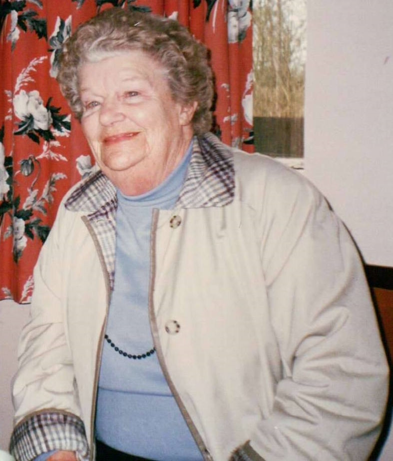
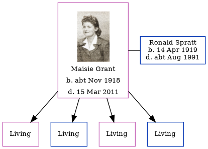

Maisie Susie Edith Spratt (née Grant) cNov 1918 - 2011
[ Home ] | [ Calendar ] | [ Surnames Index ] | [ Errors ] | [ Family History ]Maisie Grant, the wife of Ronald Ernest Spratt (the first cousin once-removed on the father's side of Nigel Horne), was born in Blean, Kent, England c. Nov 19181. She married Ronald (a barman with whom she had 4 surviving children Ann Phyllis, Ian Ronald, Christine R and David J) in Thanet, Kent, England around Aug 19393.
She died on 15 Mar 2011 in Winchester, Hampshire, England2.
Citations
- England & Wales births 1837-2006 - Findmypast
- England & Wales Government Probate Death Index 1858-2019 - Findmypast
- England & Wales, Marriage Index: 1916-2005 Online publication - Provo, UT, USA: The Generations Network, Inc., 2009.Original data - General Register Office. England and Wales Civil Registration Indexes. London, England: General Register Office. © Crown copyright. Published by permission of the Cont
Media
Maisie Grant 2
Maisie Grant 4

Maisie Grant 4
Maisie Grant 5
Maisie Grant - 6
Maisie Grant - 7
Maisie Grant - 8
Masie Grant
Maisie Susie Edith Grant 9
England & Wales births 1837-2006 - BMD/B/1918/4/AZ/000459/069
England & Wales marriages 1837-2008 - BMD/M/1939/3/AO/000807/095
England & Wales Government Probate Death Index 1858-2019 - GBOR/GOVPROBATE/B/2011-2012/00420348
Family Tree
Map
Generated by ged2site. Last updated on Jul 3, 2024
Known Issues
No records of living with anyone
1939 UK register information missing